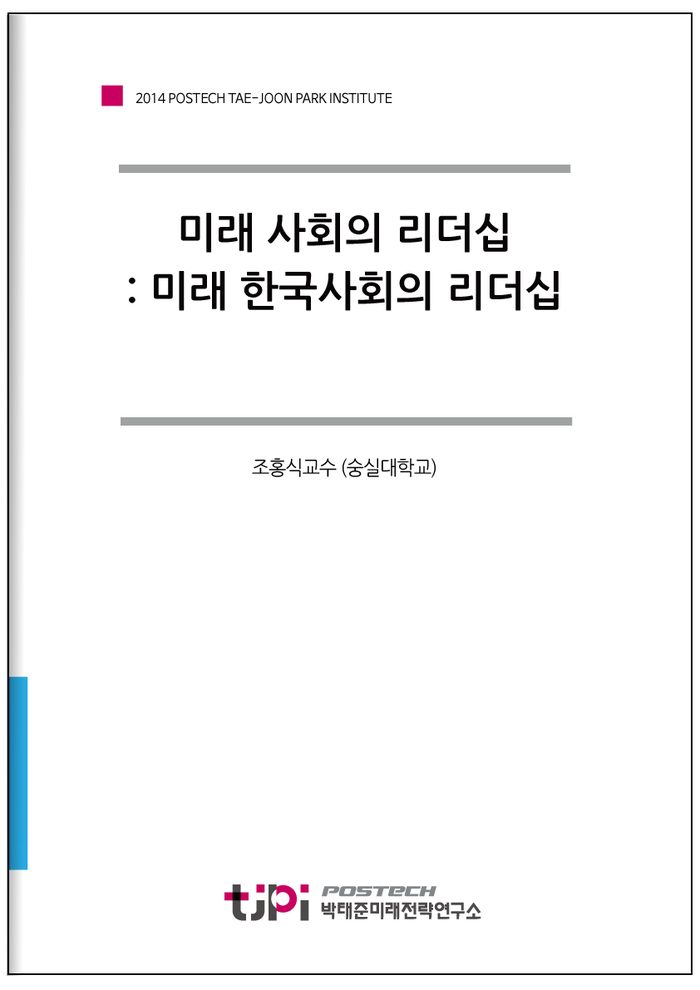

저자 조홍식교수 (숭실대학교)연재일 2014-12-09
요 약
미래 한국사회의 리더십
리더십 위기가 누적된 한국사회-국가, 기업, 종교, 가정의 실패
한국에서 리더십에 대한 위기를 조금 더 자세히 진단하기 위해서는 정치뿐 아니라 사회의 각 분야를 잘 들여다볼 필요가 있다. 논의의 시작은 정치 리더지만, 사실 우리 사회가 총체적 리더십의 위기를 가지고 있다는 사실에 주목해야 한다. 따라서 정치나 국가에서 시작하여, 기업과 종교, 그리고 가장 사적인 가정에 이르기까지 리더십이라는 일관된 관점에서 실패를 지적할 필요가 있다.
근대 국가가 만들어 진 근본에는 시민과 국가의 계약이 존재한다. 이 약속이 깨지는 순간 국가가 무너지고 혁명의 권리가 머리를 드는 것이다. 혁명의 상황은 본질적으로 기존의 리더십이 무너짐을 의미한다. 한국의 리더십 위기는 국가의 실패에서 첫 원인을 찾아야 한다. 국가와 지도자, 관료는 여전히 권위적이고 특권적이며 불신의 대상이다. 일부에서는 정치적 성향에 따라 특정 시기 국가나 지도자, 관료의 리더십을 강조하지만 국민의 일반적 호응을 얻거나 합의의 대상이 되는 것은 아니다.
‘노블레스 오블리쥬’(Noblesse oblige)를 언급하며 한국의 기업인들도 사회에 기여하고 선도하는 역할을 해야 한다고 주장한다. 실제 미국 사회에서는 록펠러, 카네기 등이 만든 전통을 빌 게이츠 등이 지속하고 있다. 21세기가 되었지만 아직 한국에서 이런 사회적 기여를 바라는 것은 무리다.
가장 많은 사람들이 일상적으로 접할 수 있는 평범한 종교 집단의 리더십은 이와 같은 청렴과 절제와 모범으로 다가오기보다는 경쟁과 성장과 축적의 측면이 더 강하게 작동하는 것이 아닌가 싶다. 적절한 종교의 리더십은 두 가지를 동시에 감안해야 하겠지만 한국의 현실은 세속이 성스러움보다 강하고, 현실이 이상을 항상 앞서는 것으로 보인다.
한국 사회에서 리더십의 실패는 가정에서도 여실히 드러난다. 현대 한국에서 가정의 리더는 존재하지 않는 듯하다. 전통 유교 사회의 가문을 대표하는 리더가 존재하는 것도 아니고, 그렇다고 핵가족의 가장이 리더 역할을 하는 듯 보이지도 않는다. 산업사회에서 세계 최고의 노동시간에 시달리는 아버지는 가정에서 사라진지 오래지만 그렇다고 어머니가 가정의 리더라고 하기도 쉽지 않다. 리더가 없다고 해서 매우 평등한 협력 체제가 구성되어 있는 것은 더더욱 아니다. 모델이 없는 상황에서 각각의 가정이 나름의 불안정한 균형을 찾아가려 노력할 뿐이다.
정치에서 경제까지, 그리고 종교에서 가정까지 리더십의 부재, 부패, 혼란과 불안은 심각한 지경이다. 이러한 현실 진단에서 바람직한 미래 리더십을 그리는 작업은 쉽지 않다. 그러나 적어도 현실의 심각한 실패를 극복하려는 노력은 급선무다.
어떻게 리더십의 위기를 극복할 것인가?
한국의 세계화는 국가와 사회가 모두 적극적이다. 국가의 ‘용감한’ 세계화 정책은 한국을 태풍 앞의 촛불처럼 만들어 놓아 불안하기도 하지만, 사회를 맹혹한 훈련을 받도록 한다는 측면도 있다. 더 중요한 것은 한국 사회가 세계에 대한 호기심, 약자에 대한 관심, 그리고 보편적 정신에 기초해서 세계를 향해 팔을 벌리고 있다는 점이다. 세계와 함께 호흡하는 한국을 감안하지 않고 이 사회를 이끌어 나갈 수는 없는 시대가 되었다.
미래에서 필요로 하는 리더십은 민주적 리더십, 도덕적 리더십, 포용적 리더십, 개방적 리더십 등 네 가지 성격을 동시에 가져야 한다. 영역과 분야 별로 리더십의 특징은 항상 존재하겠지만 어느 조직이나 집단이 필요로 하는 미래 리더십의 공통적인 요소를 파악하는 것이 여기서의 목표였다. 가장 위계적이라고 공감하는 군대조차 민주적인 리더십이 필요하다는 사실을 최근 다양한 사건·사고에서 발견할 수 있다. 도덕적인 리더십은 정치나 종교에서만 필요한 것이 아니다. 개인이 사업을 하던 시대에서 점차 거대한 기업과 기관이 세계를 무대로 활동하는 21세기에는 경제 역시 강력한 도덕적 리더십을 필요로 한다.
이러한 리더십을 갖추기 위해서는 소통 능력, 인문 교육, 봉사 의무, 국제 경험 등에 대한 체계적 교육이 대단히 중요하다. 특히 한국의 미래에서 동아시아는 날이 갈수록 그 중대성이 증대될 수밖에 없을 전망이다. 사회적, 국가적 차원의 선제적인 대응이 요청된다.
동아시아의 평화적 공존과 번영에 국운이 달린 한국이 저렴한 비용으로 주도할 수 있는 프로젝트 가운데 하나로 보인다. 미래 동아시아의 리더를 양성하기 위한 초국적 교육 기관을 한국에 둠으로써 기득권이 없는 분야에서 한국이 주도적 역할을 담당할 수 있으며, 선점 효과를 누릴 수 있다. 미래 동아시아의 리더를 한국에서 만들어내는 것만으로도 한국은 소프트파워를 쉽게 강화하는 셈이다.
목 차
Ⅰ. 한국 사회, 리더십의 위기
Ⅱ. 사회의 변화와 리더십의 적합성
Ⅲ. 미래의 리더십
Ⅳ. 리더십 교육
참고자료
내 용
[2014 연구논문] 미래 사회의 리더십 : 미래 한국사회의 리더십
조홍식교수 (숭실대학교)

